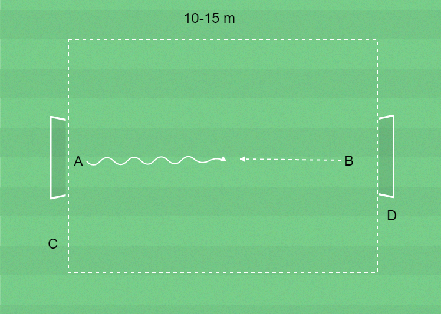

 ▶
▶
Förhindra och rädda avslut
Hindra motståndaren från att dribbla förbi och avsluta.
Frågeexempel
Hur gör du det svårt för motspelaren att dribbla förbi dig?
Jag står upp och följer med i sidled.
Hur gör du för att kunna erövra bollen från motspelaren?
Jag kastar mig, skjuter ifrån med foten närmast bollen, sträcker fram armarna och fångar bollen.
4 barn, 2 mål avstånd 10–15 meter och bollar.
A försöker dribbla förbi B för att göra mål.
B möter A och försöker hindra dribblingsförsöket.
A backar tillbaka till sitt mål.
B utmanar C, och så vidare.
Observera att filmen innehåller samtliga 5 övningar från träningspasset!